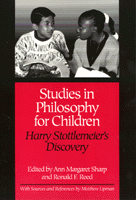

A collection of essays that reflects upon the development, refinement, and maturation of Philosophy for Children
A collection of essays that reflects upon the development, refinement, and maturation of Philosophy for Children


 A collection of essays that reflects upon the development, refinement, and maturation of Philosophy for Children
A collection of essays that reflects upon the development, refinement, and maturation of Philosophy for Children

|  |
Studies in Philosophy for ChildrenHarry Stottlemeier's Discoveryedited by Ann Margaret Sharp and Ronald F. Reedpaper EAN: 978-0-87722-873-8 (ISBN: 0-87722-873-6) |
"[This] volume goes a long way toward enriching the philosophical knowledge of the typical Philosophy for Children teacher, and will constitute an important and useful contribution...a kind of new generation of service to the magnificent goal of making philosophy available to young children in a school setting."
—Robert J. Mulvaney, University of South Carolina
Harry Stottlemeier's Discovery, created by Matthew Lipman in 1969, is now a widely used and highly successful tool for teaching philosophy to children. As the original novel of the Philosophy for Children program, its goal is to present major ideas in the history of philosophy, nurturing children's ability to think for themselves. At present, it is taught in 5,000 schools in the United States and has been translated into eighteen languages worldwide. This collection of essays reflects upon the development, refinement, and maturation of Philosophy for Children and on its relationship to the tradition of philosophy itself.
The contributors are philosophers themselves who have taught from Lipman's novels or conducted workshops instructing elementary school teachers on how most effectively to utilize the program in their classrooms. Teaching Harry raises philosophical issues concerning such concepts as authority, morality, religion, justice, truth, knowledge, beauty, and goodness. Gracing each article with personal experience, the authors recount their own struggles against the claims of philosophers and psychologists who have previously underestimated children's moral capability because of their lack of political and social experience.
Acknowledgments
Introduction
Part I: Some Remarks by Matthew Lipman on Philosophy for Children
1. On Writing a Philosophical Novel
2. How Old Is Harry Stottlemeier?
3. Integrating Cognitive Skills and Conceptual Contents in Teaching the Philosophy for Children Curriculum
Part II: Ethical, Social, and Political Issues
4. Moral Education: From Aristotle to Harry Stottlemeier – Michael S. Pritchard
5. Discussion and the Varieties of Authority – Ronald F. Reed
6. Women, Children, and the Evolution of Philosophy for Children – Ann Margaret Sharp
Part III: Metaphysical and Epistemological Problems
7. Discovering Yourself a Person – Ann Margaret Sharp
8. Knowledge and the Classroom – Martin Benjamin and Eugenio Echeverria
9. Thinking for Oneself – Philip C. Guin
10. Critical Thinking: Problem Solving or Problem Creating – Michael S. Pritchard
11. The Development of Reasoning in Children through Community of Inquiry – John C. Thomas
Part IV: Logical Issues
12. A Guided Tour of the Logic in Harry Stottlemeier�s Discovery – Laurance J . Splitter
13. Standardization – Clive Lindop
14. Relationships – Clive Lindop
15. Countering Prejudice with Counterexamples – Philip C. Guin
Part V: Pedagogical Dimension
16. On the Art and Craft of Dialogue – Ronald F. Reed
17. Inventing a Classroom Conversation – Ronald F. Reed
18. A Letter to a Novice Teacher: Teaching Harry Stottlemeier�s Discovery – Ann Margaret Sharp
Epilogue
19. A Critical Look at Harry Stottlemeier�s Discovery – Frederick S. Oscanyan
20. A Second Look at Harry – Frederick S. Oscanyan
Sources and References for Harry Stottlemeier�s Discovery – Matthew Lipman
About the Authors
Ann Margaret Sharp is Associate Director of the Institute for the Advancement of Philosophy for Children and Professor of Education at Montclair State College. She is also the coauthor (with Matthew Lipman and Frederick S. Oscanyan) of Philosophy in the Classroom (Temple).
Ronald F. Reed is Director of the Center for Analytic Teaching and Professor of Philosophy and Education at Texas Wesleyan University. He is the author of numerous publications on philosophy for children, including Talking with Children and Rebecca.
Contributors: Martin Benjamin, Eugenio Echeverria, Philip C. Guin, Clive Lindop, Matthew Lipman, Frederick Oscanyan, Michael Pritchard, John C. Thomas, Laurence J. Splitter, and the editors.
© 2015 Temple University. All Rights Reserved. This page: http://www.temple.edu/tempress/titles/837_reg.html.